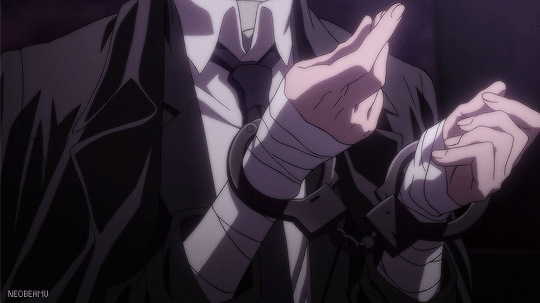

Bungou Stray Dogs Character Analysis
Analysis (plural form: Analyses) is the process of isolating a certain concept or topic into fragments in order to gain a better understanding of it.
In character analysis, you evaluate a character's distinctions, their backstory, role in the story, and the conflicts they experience. This way, these given clues from the story help us learn more about the characters. It helps us understand the plot and the people involved, and it also creates a form of realism that entices the audience and invests them more into the story. They develop a certain intimacy with the characters while they get to know them (as if they're actual people), resulting in attachment and more engagement. Additionally, in some cases, analyzing and discerning a character's development plays a big role in keeping track of the story's pacing; especially if it is a main protagonist and/or antagonist.
This site aims to show the importance of character analysis by doing so with 6 characters from Studio Bones' Japanese anime Bungou Stray Dogs, adapted from the manga series written by Kafka Asagiri and illustrated by Sango Harukawa. All rights to the franchise, story, and characters belong to them!
SNAP!
Characters
This is the selection of characters that have been analyzed. Click on the character icons to learn more about them!